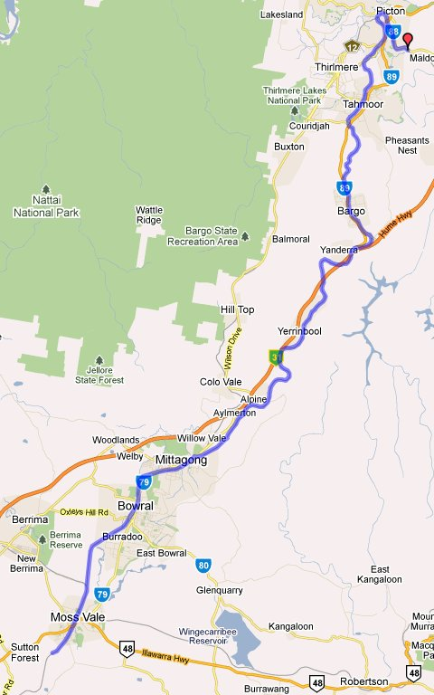

New South Wales - Southern Highlands Route
Route design by Chris Nelson and Brian Bere-Streeter
Overview
This route captures hilly trackage south of Sydney on the Southern Main. The route commences at Maldon, north of Picton and runs to south of Moss Vale.
The route has been significantly upgraded by Brian Bere-Streeter who has added track and scenery items.

Prototype Operator: New South Wales Government Railways and its successors.